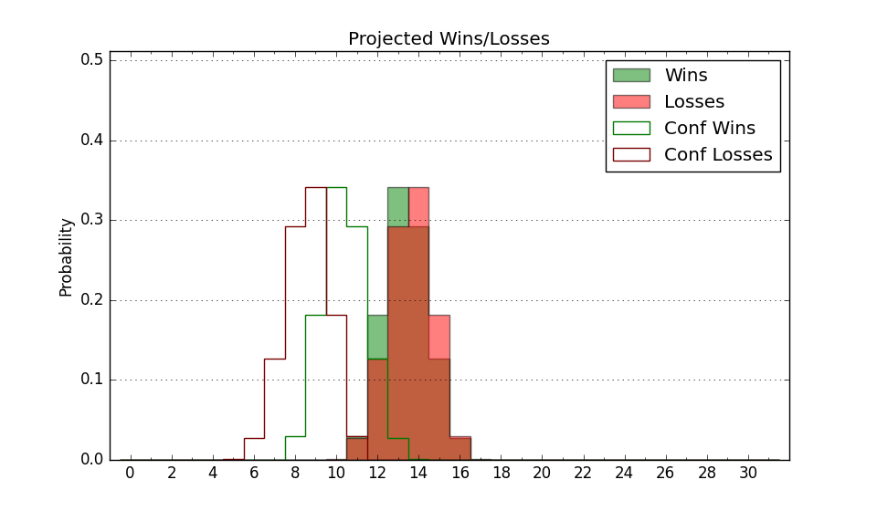

| Home | Game Probabilities | Conferences | Preseason Predictions | Odds Charts | NCAA Tournament |
| City: | Fort Wayne, Indiana | |
| Conference: | Horizon (5th)
| |
| Record: | 12-8 (Conf) 17-12 (Overall) | |
| Ratings: | Comp.: 0.2 (159th) Net: 0.2 (159th) Off: 110.4 (102nd) Def: 110.2 (240th) SoR: 0.0 (111th) |
| Remaining | ||||||
|---|---|---|---|---|---|---|
| Date | Opponent | Win Prob | Pred. | |||
| 3/6 | @ Youngstown St. (194) | 42.2% | L 76-78 | |||
| Previous | Game Score | |||||
| Date | Opponent | Win Prob | Result | Off | Def | Net |
| 11/8 | @UCF (80) | 15.6% | L 68-75 | -8.7 | 16.2 | 7.4 |
| 11/12 | Bethune Cookman (272) | 84.0% | W 91-69 | 5.3 | 6.5 | 11.7 |
| 11/16 | Southern Indiana (333) | 91.7% | W 93-74 | 12.0 | -12.6 | -0.6 |
| 11/20 | @Penn St. (65) | 11.9% | L 89-102 | 20.5 | -20.2 | 0.3 |
| 11/25 | (N) Drexel (201) | 59.1% | W 87-81 | 27.8 | -11.0 | 16.8 |
| 11/26 | (N) Radford (169) | 52.1% | L 56-69 | -27.9 | 3.3 | -24.6 |
| 11/30 | @Texas A&M Commerce (330) | 74.5% | W 77-57 | 9.2 | 13.3 | 22.5 |
| 12/5 | @Detroit (334) | 77.1% | L 78-79 | -0.3 | -17.8 | -18.1 |
| 12/8 | Robert Morris (155) | 63.9% | W 82-77 | -4.6 | 8.3 | 3.7 |
| 12/11 | IUPUI (321) | 89.9% | W 78-76 | -9.2 | 0.3 | -8.9 |
| 12/15 | @Eastern Michigan (298) | 66.1% | W 99-76 | 27.4 | -5.8 | 21.6 |
| 12/22 | @Michigan (27) | 4.8% | L 58-89 | -10.7 | -1.0 | -11.7 |
| 12/29 | @Green Bay (329) | 74.2% | W 83-67 | 5.5 | 7.8 | 13.3 |
| 1/1 | @Northern Kentucky (231) | 49.6% | L 68-69 | -11.3 | 5.8 | -5.6 |
| 1/4 | Youngstown St. (194) | 71.3% | W 90-81 | 1.0 | -0.1 | 0.9 |
| 1/8 | Milwaukee (143) | 61.4% | W 78-73 | -10.0 | 19.0 | 9.0 |
| 1/11 | Detroit (334) | 92.0% | W 90-67 | 15.6 | -10.1 | 5.5 |
| 1/15 | @Wright St. (224) | 48.1% | W 120-113 | 18.9 | -3.4 | 15.5 |
| 1/22 | @Oakland (205) | 45.2% | L 72-76 | 6.6 | -12.3 | -5.7 |
| 1/25 | @IUPUI (321) | 72.4% | W 91-80 | 3.6 | -0.8 | 2.8 |
| 1/30 | Cleveland St. (188) | 70.4% | L 58-68 | -24.0 | -6.7 | -30.7 |
| 2/2 | @Milwaukee (143) | 31.8% | W 81-79 | 3.3 | 6.8 | 10.1 |
| 2/5 | Wright St. (224) | 75.9% | W 87-64 | -2.5 | 22.0 | 19.5 |
| 2/8 | Green Bay (329) | 90.7% | W 89-74 | -6.1 | -1.2 | -7.3 |
| 2/12 | @Youngstown St. (194) | 42.2% | L 71-93 | -5.1 | -27.1 | -32.2 |
| 2/15 | @Robert Morris (155) | 34.2% | L 69-76 | -7.8 | 3.9 | -3.9 |
| 2/21 | Oakland (205) | 73.7% | W 80-66 | -1.1 | 12.4 | 11.3 |
| 2/27 | Northern Kentucky (231) | 77.0% | L 74-79 | -12.8 | -3.4 | -16.2 |
| 3/1 | @Cleveland St. (188) | 41.1% | L 57-68 | -15.9 | 5.2 | -10.7 |
| Stats & Trends | |||||
|---|---|---|---|---|---|
| Current | Day | Week | Month | Season | |
| Composite | 0.2 | +0.1 | -0.9 | -1.7 | -1.2 |
| Comp Rank | 159 | +1 | -11 | -16 | -26 |
| Net Efficiency | 0.2 | +0.1 | -0.9 | -1.7 | -- |
| Net Rank | 159 | +1 | -11 | -15 | -- |
| Off Efficiency | 110.4 | -0.1 | -1.3 | -3.1 | -- |
| Off Rank | 102 | -- | -13 | -36 | -- |
| Def Efficiency | 110.2 | +0.2 | +0.4 | +1.3 | -- |
| Def Rank | 240 | +4 | +10 | +43 | -- |
| SoS Rank | 270 | +7 | +8 | +30 | -- |
| Exp. Wins | 17.0 | -- | -1.3 | -0.9 | -1.0 |
| Exp. Conf Wins | 12.0 | -- | -1.3 | -0.9 | -1.6 |
| Conf Champ Prob | 0.0 | -- | -10.1 | -8.0 | -32.2 |

| Advanced Stats | ||
|---|---|---|
| Stat | Value | Rank |
| Off Eff FG % | 0.534 | 107 |
| Off Ast Ratio | 0.136 | 232 |
| Off ORB% | 0.202 | 349 |
| Off TO Rate | 0.121 | 25 |
| Off FT Ratio | 0.285 | 307 |
| Def Eff FG % | 0.555 | 328 |
| Def Ast Ratio | 0.155 | 255 |
| Def ORB% | 0.312 | 278 |
| Def TO Rate | 0.168 | 69 |
| Def FT Ratio | 0.291 | 85 |